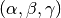
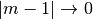
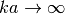
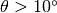
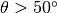
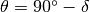
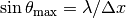

Differential scattering cross section¶
GGADT by default will produce an orientation-averaged, 1-dimensional result for  for a set of
for a set of  determined by either the
determined by either the --dtheta parameter or the --nscatter parameter.
Orientation averaging¶
GGADT has three methods for producing averages over orientations, all of which are set by the angle-mode parameter.
- random
- GGADT will chose
norientationsrandom orientations - sequential
- GGADT will choose
norientations, evenly spaced over .
. - file
GGADT will read in file; each line contains three floating point numbers, representing
(if --axes-conventionis set toDDSCAT), or  if--axes-conventionis set toMSTM. See Angle conventions for more information about axes conventions. The file should have just three columns, each separated by white-space of some kind (e.g. tab, space):0.0 0.0 0.0 0.234 0.12 0.0 ...
Large angle scattering¶
ADT is asymptotically correct as  and . In these limits, scattering at large angles is very small. If you’re worried about large angle scattering (say ), be careful. Obtaining accurate estimates of small intensity scattering at large angles (especially angles > 90 degrees) may require a more exact treatment of the scattering problem (e.g. Mie theory).
Though, technically, the theoretical framework of ADT allows you to calculate  out to arbitary scattering angle
out to arbitary scattering angle  , GGADT will fail at angles close to 90 degrees. GGADT fails partly because of the computational shortcuts that allow GGADT to be extremely fast, and partly because the authors of GGADT didn’t intend for GGADT to be used at very large scattering angles where ADT may not give the correct results.
, GGADT will fail at angles close to 90 degrees. GGADT fails partly because of the computational shortcuts that allow GGADT to be extremely fast, and partly because the authors of GGADT didn’t intend for GGADT to be used at very large scattering angles where ADT may not give the correct results.
If you’re using GGADT to do very large angle scattering (), you will likely run into one or more of these problems:
- For the analytic case of spherical particles, GGADT should be fine up to any angle you want, but because of some programming quirks <https://xkcd.com/1513/>, GGADT will break at . To make
 smaller, you should set
smaller, you should set --grid-widthto as large a number as you need. An unfortunate side effect: computation time will increase as you increase--grid-width, even though you’re not bothering with any numerical grids. Depending on how close to 90 degrees you’d like to get, this may present too large a strain on your patience. We’d like to say this is all intentional in order to prevent you from abusing GGADT for large angle calculations, but really it’s because we’re terrible programmers. - For numerical calculations, you run into another limit; . This can be fixed by using a finer grid, but the above problems will still plague you.
1d vs 2d results¶
How fast 1d and 2d computations converge. 2d computations, however, usually take significantly longer to run.
Using the nphi parameter¶
The --nphi parameter (only used when --do-full-2d-fft is specified) lets you take advantage of a full 2D calculation of  , so long as you’re only interested in the orientation-averaged result that only depend on the scattering angle .
, so long as you’re only interested in the orientation-averaged result that only depend on the scattering angle .
By averaging over  for a single orientation, we reduce the number of random (or non-random) orientations that we need to calculate the full 2D in order to reach an accurate estimate of (the orientation-averaged result).
for a single orientation, we reduce the number of random (or non-random) orientations that we need to calculate the full 2D in order to reach an accurate estimate of (the orientation-averaged result).